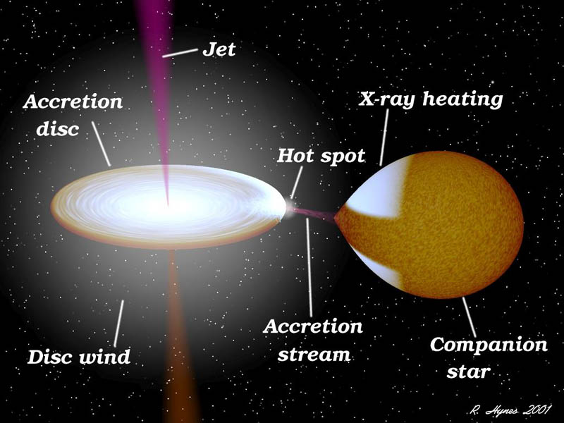

DIBS

X-ray Binary (XRB)
X-ray binaries are binary stars made up of a normal star, referred to as the donor, and either a black hole or a neutron Star, referred to as the accretor. These systems are very bright, having luminosities greater than about 1035 erg/s, and have matter flowing from the donor to the accretor. X-rays are emitted in this acretion process (Carroll & Ostlie 2006). Most X-ray binaries have neutron star accretors, and a few have black hole accretors (Özel et al. 2010, Özel & Freire 2016). X-ray binaries can be divided into high and low mass systems. In high mass X-ray binaries the normal donor star is more massive than the accretor and accretion usually happens via a focused wind. In low mass X-ray binaries, the accretor is more massive, and accretion usually happens via Roche lobe overflow. X-ray binaries can also show relativistic jets coming from the accretor. X-ray binaries are similar to cataclysmic variables, but in these systems the accretor is a white dwarf instead of a black hole or neutron Star.

Artist’s representation of an X-ray binary. Credit: R. Hynes